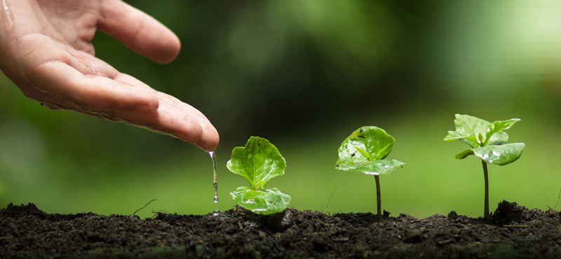

גינון אקלוגי

גינה, מעצם המהות שלה, חייבת להיות ירוקה. אבל האם היא באמת עומדת בקנה אחד עם שמירה על הסביבה? באופן אולי מפתיע, התשובה לכך לא בהכרח חיובית. על מנת להבדיל כיום את הגינות שפועלות לטובת הסביבה לעומת אלה שלא, נעשה כיום השימוש במונח "גינון אקולוגי", תחתיו שורה ארוכה של כלים ופרקטיקות. אנחנו נתייחס כאן למאפיינים העיקריים של המונח.
הגורמים שהופכים גינה ירוקה לירוקה באמת
ניתן למנות מספר הנחות יסוד העומדות בבסיס הגינון האקולוגי, שתיהן באות לפעול, בסופו של יום, לטובת כדור הארץ בו אנו חיים. ההנחה
הראשונה היא שגינה אקולוגית צריכה להיות חסכונית ככל האפשר במים. כאשר החורף האחרון שידעה מדינת ישראל שחון במיוחד,
ועל רקע הידלדלות מאגרי המים במדינה, ברור מדוע צורך זה הופך לחיוני עוד יותר.
ההיבט המרכזי
השני של הגינות האקולוגיות נוגע לעלויות התחזוקה שלהן. זהו טיעון כלכלי, אשר משלים במידה רבה את זה הראשון: דירות
חסכוניות יהיו פשוטות יותר לתחזוקה. כיצד הנקודות האלה באות לידי ביטוי בגינה האקולוגית הממוצעת?
צמחיה, אדמה ומה שביניהם
בגינה אקולוגית, יש דגש ניכר על שימוש בצמחיה "חסכונית". ראשית, תהיה זו צמחיה מקומית, מה שיבטיח לא רק עמידות שלה בפני מזיקים,
אלא גם ימנע שימוש מאסיבי במים לצרכי השקייתה. בהמשך לכך, הצמחיה צריכה להיות גם רב עונתית, ולהחזיק מעמד היטב
לכל אורך השנה: המטרה אינה להחליף אותה מדי מספר חודשים, על כל ההשלכות הכספיות שבכך.
גינון
אקולוגי מכניס לתוך המשוואה שלו גם את האדמה עצמה, כשדגש עיקרי חייב להיות מושם על שימור שלה גם כן. ברוב המקרים,
הדבר נעשה באמצעות הוספת חומרים אורגניים, חמצן ומים. הדברת הקרקע עצמה צריכה להיות גם היא אורגנית, וכך גם לגבי
הדישון.
היבט מרכזי: מיחזור מים
טענו קודם לכן כי החיסכון במים חייב להיות משמעותי על מנת שגינה מסוימת תוכל להיות מוגדרת כאורגנית. בשנים האחרונות,
שמדברים בישראל על חיסכון במים, מתכוונים, במידה לא מבוטלת, למיחזור מים, מה שאפשרי באמצעות שיטה העונה לשם "מים
אפורים".
שיטה זו מבוססת על הפיכת מי השופכין אשר בבית נתון – והם יכולים להיות מי הכיור, האמבטיה, הכביסה או אפילו
המזגן – למים שניתן להשתמש בהם שנית. ברור כי הזיהום היחסי של מים אלה לא יאפשר שתיה שלהם או רחצה באמצעותם,
אך בהחלט ניתן לרתום אותם להשקייתה של הגינה האקולוגית. הדבר נעשה בפועל באמצעות מערכות ייעודיות, אשר מעבירות
את אותם מים אפורים למיכלי סינון והדחה, ומשם – היישר לצורך השקייתה של הגינה.
המשמעות של הליך זה, מיותר
אולי לציין, היא צמצום משמעותי, בגובה של עשרות אחוזים, בבזבוז המים המשפחתי. גם לכך יש השפעה כלכלית שאינה מבוטלת
כלל וכלל.
התחזיות לגבי העתיד
יחד עם העלייה בהיקפי המיחזור בישראל, וההתבססות ההולכת וגוברת על בנייה ירוקה בתחום הנדל"ן, ניתן להבחין בשנים האחרונות
במגמה חיובית גם בכל הנוגע לגינות האקולוגיות. יותר ויותר אנשים מתכננים מראש גינה שתהיה החסכונית ביותר שאפשר,
או לחילופין מנסים לברר כיצד הגינה שלהם תהפוך לאקולוגית.
בעזרת שינויים בגינה, וסיוע של בעל מקצוע, ניתן
להפוך כמעט כל גינה לאקולוגית. הציפיות הן שבשנים הקרובות נראה את מספר הגינות האקולוגיות בישראל רק גדל. אחת
הסיבות לכך היא חינוכית דווקא: בלא מעט בתי ספר בישראל הוקמו בשנים האחרונות גינות אקולוגיות, המשמשות למגוון
תפקידים. הן מעניקות תעסוקה לילדים, מאפשרות להן לגדל צמחים, פירות וירקות לשימושם האישי, ובעיקר – מלמדות אותן
לא מעט על ערכים (מחויבות, למשל), שמירה על הסביבה ואפילו תזונה בריאה.
טבלה לשימוש במים בגינות פרטיות ובבתים משותפים
תצרוכת מים בגינה קטנה (ליטרים) למ"ר ביום -| האזור | קיץ | אביב וסתיו | ||||
|---|---|---|---|---|---|---|
| דשא, ועצי פרי | פרחים וירקות | שיחים, ועצי נוי | דשא, ועצי פרי | פרחים וירקות | שיחים, ועצי נוי | |
| רצועת החוף | 3.0 | 4.5 | 1.5 | 2.0 | 3.0 | 1.0 |
| מישור החוף והשפלה | 3.5 | 5.0 | 1.5 | 2.5 | 3.0 | 1.0 |
| איזור ההר | 4.0 | 6.0 | 2.0 | 3.0 | 4.5 | 1.5 |
| הנגב והעמקים החמים | 4.5 | 6.5 | 2.0 | 3.0 | 4.5 | 1.5 |
| הערבה ואילת | 7.0 | 11.0 | 3.5 | 5.0 | 8.0 | 2.5 |